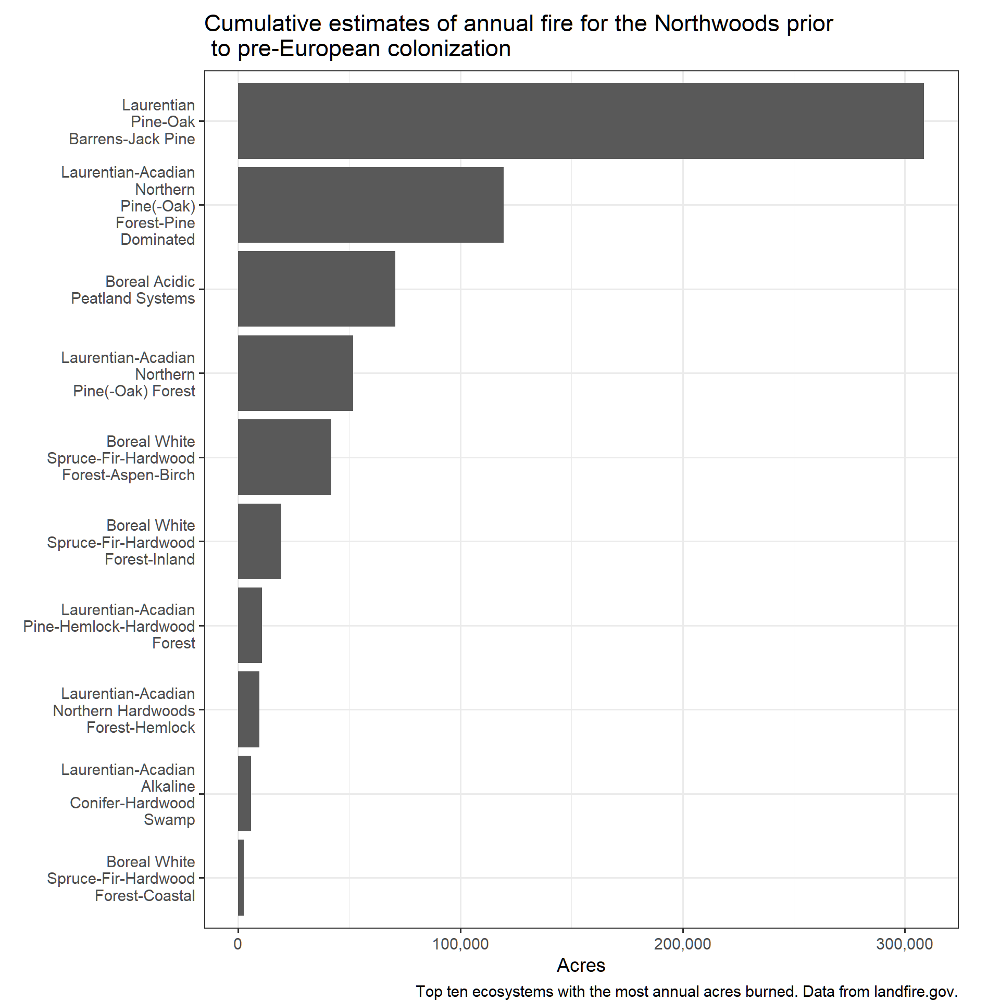

Historical Fire Regimes
INCOMPLETE DRAFT FOR INTERNAL CONSUMPTION ONLY
Summary
Historically the Northwoods experienced, on average, ~1.2M acres of fire annually. These fires were largely ignited as part of Indigenous land management practices (see Stewart, 2002). Areas with relatively short historical MFRIs were spread across the region with several areas standing out including:
- central Minnesota
- northeastern and northwestern Wisconsin
- large sections of the northern half of the lower peninsula of MI
While these large areas stand out, there are historically fire adapted ecosystems peppered across much of the region. Notably, some of the fire-adapted ecosystems were surrounded by ecosystems with typically long MFRIs, such as northern hardwoods limiting spread. Further, most of the ecosystems with short MFRI were dominated by surface fires that would have killed less than 25% of the vegetation.

Most historical fires occurred in pine, oak and peatland dominated ecosystems, especially the barrens types.
Wrangled Data
Below you can review the data after minor wrangling (e.g., cleaning column names, summing and averaging by BpS Name).
| BPS NAME |
Mean Replacement FRI |
Mean Mixed FRI |
Mean Surface FRI |
Total Annual Fire Acres |
Total Acres |
|---|---|---|---|---|---|
| Laurentian-Acadian Northern Hardwoods Forest-Hemlock | 2,040 | 0 | 0 | 9,431 | 19,238,461 |
| Boreal Acidic Peatland Systems | 716 | 0 | 123 | 70,741 | 7,427,853 |
| Laurentian-Acadian Alkaline Conifer-Hardwood Swamp | 989 | 0 | 0 | 5,808 | 5,744,487 |
| Boreal White Spruce-Fir-Hardwood Forest-Inland | 310 | 1,232 | 0 | 19,340 | 4,310,229 |
| Laurentian-Acadian Northern Pine(-Oak) Forest-Pine Dominated | 230 | 0 | 40 | 119,420 | 4,060,277 |
| Boreal White Spruce-Fir-Hardwood Forest-Aspen-Birch | 112 | 243 | 0 | 41,884 | 3,183,156 |
| Laurentian-Acadian Northern Pine(-Oak) Forest | 340 | 602 | 30 | 51,641 | 2,475,787 |
| Laurentian Pine-Oak Barrens-Jack Pine | 25 | 46 | 18 | 308,588 | 2,468,700 |
| Laurentian-Acadian Pine-Hemlock-Hardwood Forest | 482 | 1,008 | 290 | 10,612 | 1,627,139 |
| Boreal White Spruce-Fir-Hardwood Forest-Coastal | 906 | 1,226 | 0 | 2,467 | 1,282,654 |
| Laurentian Pine-Oak Barrens | 109 | 75 | 5 | 269,182 | 1,076,728 |
| Laurentian-Acadian Shrub-Herbaceous Wetland Systems | 18 | 0 | 0 | 55,380 | 996,844 |
| Laurentian-Acadian Floodplain Systems | 0 | 435 | 68 | 14,217 | 838,822 |
| Eastern Boreal Floodplain | 0 | 581 | 312 | 3,979 | 807,668 |
| Boreal Jack Pine-Black Spruce Forest | 82 | 0 | 0 | 9,370 | 768,332 |
| North-Central Interior Maple-Basswood Forest | 1,027 | 0 | 857 | 1,487 | 694,418 |
| North-Central Interior Dry-Mesic Oak Forest and Woodland | 119 | 88 | 37 | 47,745 | 668,566 |
| Boreal Jack Pine-Black Spruce Forest-Pine Barrens | 34 | 64 | 7 | 130,854 | 654,270 |
| North-Central Interior Oak Savanna | 389 | 171 | 5 | 67,749 | 338,746 |
| Central Interior and Appalachian Floodplain Systems | 0 | 431 | 67 | 1,915 | 111,050 |
| Laurentian-Acadian Northern Hardwoods Forest-Northern Sugar Maple-Basswood | 1,016 | 0 | 0 | 100 | 101,763 |
| North-Central Oak Barrens | 197 | 194 | 6 | 20,277 | 101,383 |
| North-Central Interior Beech-Maple Forest | 1,004 | 0 | 836 | 151 | 68,981 |
| Central Interior and Appalachian Swamp Systems | 987 | 0 | 0 | 67 | 66,107 |
| Boreal Jack Pine-Black Spruce Forest-Spruce-Fir | 112 | 0 | 0 | 546 | 61,190 |
| Great Lakes Wooded Dune and Swale | 3,715 | 536 | 0 | 97 | 45,213 |
| Central Interior and Appalachian Shrub-Herbaceous Wetland Systems | 17 | 0 | 0 | 2,031 | 34,526 |
| North-Central Interior Sand and Gravel Tallgrass Prairie | 4 | 0 | 87 | 10,441 | 31,323 |
| Eastern Great Plains Tallgrass Aspen Parkland | 16 | 0 | 8 | 4,981 | 29,887 |
| North-Central Interior Dry Oak Forest and Woodland | 120 | 104 | 15 | 2,005 | 22,565 |
| Great Lakes Alvar | 439 | 3,247 | 0 | 39 | 14,939 |
| Northern Tallgrass Prairie | 5 | 0 | 0 | 3,061 | 14,455 |
| Central Tallgrass Prairie | 4 | 0 | 0 | 2,464 | 9,858 |
| Paleozoic Plateau Bluff and Talus | 15 | 126 | 102 | 730 | 8,763 |
| Boreal Aspen-Birch Forest | 82 | 0 | 0 | 70 | 5,704 |
| Western Great Plains Depressional Wetland Systems | 20 | 0 | 0 | 21 | 422 |
| Great Lakes Wet-Mesic Lakeplain Prairie | 24 | 0 | 0 | 8 | 193 |
| Great Plains Prairie Pothole | 50 | 0 | 0 | 2 | 109 |
| Laurentian-Acadian Northern Hardwoods Forest | 2,109 | 0 | 0 | 0 | 29 |
| Eastern Great Plains Floodplain Systems | 517 | 77 | 176 | 0 | 9 |